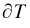

Version Update and Enhancement
Version 2.41 Enhancement
The 2.41 version of HiSIM_HV contains the following changes:
Introduced geometry-dependence to NDEPM. New parameters NDEPML and NDEPMLP are added with defaults 0 and 1, respectively.
Improvement on gm at high Vd with back bias dependence.
Version 2.40 Enhancement
The 2.40 version of HiSIM_HV contains the following changes:
- Support added for the following models:
- The new flags CORS and CORD are introduced for activation of the newer model for drift region resistance (CORDRIFT=1) on the source and the drain side, respectively.
- Source/Bulk and Drain/Bulk junction diode's internal node connection (CODIO=1)
- NQS effect in overlap charge (CONQSOV=1)
-
Gate/drain overlap capacitance for trench-gate structures (COTRENCH=1)
- Implementation of node-collapsing using the port connect mechanism.
- Parameter boundaries are revised for mitigating possible math errors.
- Some if statements that would potentially hinder Verilog-A's auto-generation of derivatives are revised.
- Some numerical codes for mitigating loss of accuracy are revised.
- Operating variable's sign and missing M-factor are corrected.
- The OP output, Cdd, is enhanced to make it more physical.
Version 2.33 Enhancement
The 2.33 version of HiSIM_HV contains the following changes:
- The lower boundary of the parameter range for LDRIFT2 has been changed from open boundary (excludes 0) to closed one (includes 0) to match the document description.
- Implemented a parameter range check for LDRIFT1+LDRIFT2 to protect against zero division in subsequent calculations in the drift resistance part.
Version 2.32 Enhancement
The 2.32 version of HiSIM_HV contains the following enhancements and bug fixes:
- Computation of Ps0_iniA
- Small is used in the HiSIM-HV code
- RD/RS calculations in CORDRIFT=0
- Negative Ndrift
- Optimization of the code in “if ( mode > 0 )” block
- Non-zero Ids(1e-12) at Vds=0
- Discontinuity in Cox vs Vgb simulation
- Cover limitation according to the overlap depth DDRIFT.
- Discontinuity in Cover at Vfb
Version 2.31 Enhancement
Version 2.31 of HiSIM_HV is an enhanced version of 2.30. In version 2.31, a new value, 2 has been added to the model parameter COSELFHEAT. When COSELFHEAT=2, a different thermal node solution limiting methodology is used than COSELFHEAT=1.
Version 2.30 Enhancement
The 2.30 version of HiSIM_HV contains the following enhancements and bug fixes:
- New break down model
- Improvement in the CORDRIFT=1 resistance model with fifth node
- Improvement in the Qover model with Cgd dependency on Vds
- Added TK and DTSH (* Temperature increase due to self-heating *) to OP variables.
- Improvement in the depletion mode model with CODEP=2, where CODEP=1 refers the version 2.2.0 model.
- Improvement in the ranges in the parameter declaration.
- Improvement in the temperature dependence of Isub
- FPE in the 1/f noise calculation.
- Negative effective channel width (Weff) of the drift region and resulting negative capacitance.
- Discontinuity in capacitances when QY model is activated.
- Discontinuity in the second derivative of Isub in CODEP=1.
- Non-convergence when CODEP=1 and COIIGS=1.
- Removal of the minimum value checking for NINDVT1 and NINVDT2.
- Added range checking of the model parameter value after calculation of Lgate, Wgate, and temperature dependence.
Version 2.20 Enhancement
The 2.20 version of HiSIM_HV contains the following enhancements and bug fixes:
-
A new depletion mode device has been added
- Following new model parameters have been added for the depletion model selection:
- Following new parameters have been added for the resistor part in the surface layer:
- Following new parameters have been added for the back part in the surface layer:
- Following new parameters have been added for both resistor part and back part:
- Following new parameters have been added for temperature dependence:
- Temperature dependence of drift mobility model has been modified
- Channel length dependence for Gds has been improved.
- Range values of the following parameters has been changed:
-
Following bugs have been fixed:
- Problem related to division by zero has been resolved
- Comments for some model parameters have been modified
- Invalidation of GMIN parameter
- Charge and capacitance calculation (noise and fringing capacitance)
- Source resistance has been added for noise calculation
- LDRIFT parameter has been removed
- Vbs dependence of the printed output for Vth
- Model names have been changed in the error messages
- The default value of LOVERS parameter is changed. Now, if LOVERS parameter is not specified, the value of LOVER parameter is used.
Version 1.24 Enhancement
The 1.24 version of HiSIM_HV contains the following bug fixes:
- Incorrect referencing to total W instead of W per finger
- Derivative calculations with respect to the temperature
Version 2.10 Enhancement
The 2.10 version of HiSIM_HV contains the following enhancements and bug fixes:
-
Degradation of mobility in the drift region with new model parameter
RDRBB. -
Additional overlap capacitance with new model parameter
QOVADD. -
Improved smoothness of drift resistance at
Vds=0. -
Changed default/min/max values of model parameters
NOVER,NOVERS,SCP1,SC1,FN1,NSTI,RDRMAX,RDRQOVER,QME1andQME2in the source code. - Changed range check method for model parameter VBFC.
-
Bug fixes done for:
-
Range check of
CGSO,CGDO,CGBO,NSUBCDFM,SUB2L, andSSC4. - Calculation of derivatives
- Temperature dependence of the output parameter VOH for the threshold voltage
- NF dependence of RD, RDVD, RD23, and RTH
- Calculation of the temperature derivatives
- Temperature dependence of the output parameter Vth
- Calculation of the output parameter Vdsat
-
Range check of
Version 2.01 Enhancement
Version 2.01 is a bug fix version of 2.00 and includes the following bug fixes and enhancements:
-
Reference voltage (Vbs -> Vbse) in the Qover model is used when model parameter
CVDSOVER != 0 - Derivative calculations with respect to temperature
- Derivative calculations in the Qover model code.
- Floating point exception in the QME model code
- Floating point exception in the smoothing functions
-
Floating point exception when model parameters
RDVDL << 0andRD23L << 0 -
Floating point exception when model flag/parameters
COSUBNODE !=0,COSYM=0, andNOVER * (NSUBSUB+NOVER) = 0 -
Floating point exception when model flag
CORDRIFT=1and model parameterRDRDJUNC = 0 -
Derivative calculations when model parameter
COSUBNODE = 1
Version 1.23 Enhancement
Version 1.23 is a bug fix version of 1.22, which includes the same bug fixes and enhancement as version 2.01 compared with version 2.00.
Version 2.00 Enhancement
Based on version 1.22, following enhancements are done in version 2.00:
New Rdrift Model
A new Rdrift model has been introduced in version 2.00. A flag CORDIFT (default= 1) has been introduced to control the evaluation of Rdrift. The Rdrift depends on Vddp as well as the Vg in the new version. The mechanism of Rdrift is shown as following figure:
The usage of the flag is shown in the following figure:
When CORDIFT=1 (default value), Rdrift is re-evaluated, otherwise, the old evaluation of Rdrift is used.
Fitting Improvements
Smoothing of Cgg with new model parameter VGSMIN.
Asymmetrical Diode Model
Introduction of new model parameters for source/drain independently.
Change of Model Descriptions
-
Introduction of new impact-ionization description in drift region with new model parameters
XPDV,XPVDH, andXPVDHG -
Improvement of the impact-ionization model in channel of core MOSFET with new model parameters
IBPC1L,IBPC1LP,SUBLDL, andSUBLDLP -
Independent fitting capability for C-V and I-V characteristics by selectively using model parameters
LOVERLDandXLDLD - Introduction of new punch-through model for core MOSFET
- Improvement of quantum effect model for core MOSFET
- Improvement of gate-poly depletion model for core MOSFET
-
Introduction of the channel leakage conductance with new model parameter
DSLEAK -
Removing of the following model parameters
PGD3,PTHROU,RD26, andQOVSM -
Resetting of parameter values to within the defined ranges for the following critical model parameters:
VFBC,XLDLD,SCP22, andRDRCX
Fixed Bugs
Following bugs are fixed in version 2.00:
- Derivative calculation of drain current with respect to the temperature
-
Inaccurate capacitance reciprocity when model parameter
CVDSOVERis not equal to0 -
Incorrect recognition of the fifth terminal connected to ground (0) when
COSUBNODE=0is chosen - Derivative calculation in self-heating model
Version 1.22 Enhancement
Based on version 1.21, following enhancements have been made in version 1.22:
Version 1.12 Enhancement
Based on version 1.11, much enhancement is done and some bugs are fixed, thus version 1.12 is presented. The difference from version 1.11 to 1.12 consists of two parts: 1) the bug fix that had been included by version 1.20, refer to session 32.5.5 for the details; 2) the enhancement from version 1.20 to 1.21.
Version 1.21 Enhancement
Based on version 1.20, enhancement is done with the overlap charge and capacitance evaluation, thus latest version 1.21 comes into being to include the change. Following lists the enhancement:
1. Improvements in the lateral-field-induced charge (Qy) model
2. Improvements in the overlap capacitance (Qover) model
New options are provided to calculate Qover. These options are selected by new model parameter COQOVSM:
COQOVSM=0: Qover is calculated with an analytical equation excluding the inversion charge
COQOVSM=1: Qover is calculated with an iterative procedure including the inversion charge (Default)
COQOVSM=2: Qover is calculated with an analytical equation including the inversion charge
Version 1.20 Enhancement
Update information of HiSIM_HV 1.2.0 from HiSIM_HV 1.1.1.
Inclusion of LDMOS-device Structures with a Substrate Node Vsub
HiSIM_HV 1.2.0 additionally covers device structures with a substrate node Vsub. The substrate node bias Vsub,s increases the depletion width Wdep at the drift/substrate (NSUBSUB) junction. The Wdep extension into the drift region causes a reduction of the effective drift depth (DDRIFT), and thus an increase of the sheet resistance.
Activate 5th and 6th Terminal
With the latest HiSIM_HV 1.20 model, up to 6 terminals are supported.
- If 5 nodes are specified and COSUBNODE=0, the 5th node is thermal node.
- If 5 nodes are specified and COSUBNODE=1, the 5th node is substrate node, if COSELFHEAT=1 is set too, internal thermal node is created.
- If 6 nodes are specified, the 5th node is substrate node and the 6th node is thermal node.
COSUBNODE is a new instance parameter at the same time recognized as a model parameter for the specification and the recognition of the node order.
Model and Instance Parameters Changes
Following new model parameters are added:
- XWDLD: Increase of the effective device width in the drift region due to 2D spreading.
- XWDC: Different effective device width for capacitances.
- NINVDW and NINVDWP: Vds dependence in the low-field-mobility width dependence.
- VMAXT1 and VMAXT2: Temperature dependence of Vmax.
- NINVDT1 and NINVDT2: Temperature dependence in the low-field-mobility Vds dependence.
- RTHTEMP1 and RTHTEMP2: Temperature dependence of the self-heating effect.
- PRATTEMP1 and PRATTEMP1: Temperature dependence of the thermal dissipation.
- COTEMP: The model flag to select different temperature effects of rd, rs, rdvd, rsvd, vmax and ninvd.
- COLDRIFT: The flag to select different Ldrift.
- Following binning option are added for following model parameters: NPEXT FALPH RD RS RD22 RD23 RD24 RDVG11 RDICT1 RDOV13 RDSLP1 RDVB RDVD RTH0 VOVER CGBO CVDSOVER POWRAT
- COSUBNODE: The model and instance flag for substrate node.
- COSELFHEAT: The flag was model parameter with the older version model. New instance flag is added with version 1.20
Flag for Temperature Dependent Model Selection
In the HiSIM_HV 1.1.1 versions, temperature dependence of the drift resistance RDVD includes no self-heating effect, whereas RD includes the effect. To treat all temperature dependent models (RD, RDVD, VMAX, NINVD) after users convenience, the flag COTEMP is introduced. Following is the selection of COTEMP:
where T is T0+
, and  is the temperature increase due to the self-heating effect.
is the temperature increase due to the self-heating effect.
The Older Version Bug Fix
Following bugs are fixed with the latest 1.20 and the older 1.11 version.
- NF in Diode model
- Ra discontinuity at Vds=0
- Rs temperature dependency
- Smoothing function in overlap capacitance model
- Other minor bugs
Return to top